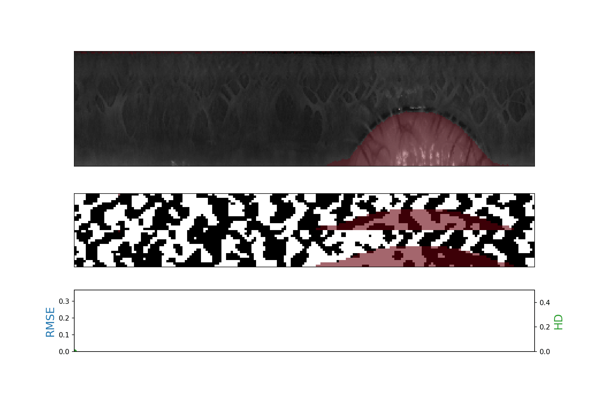
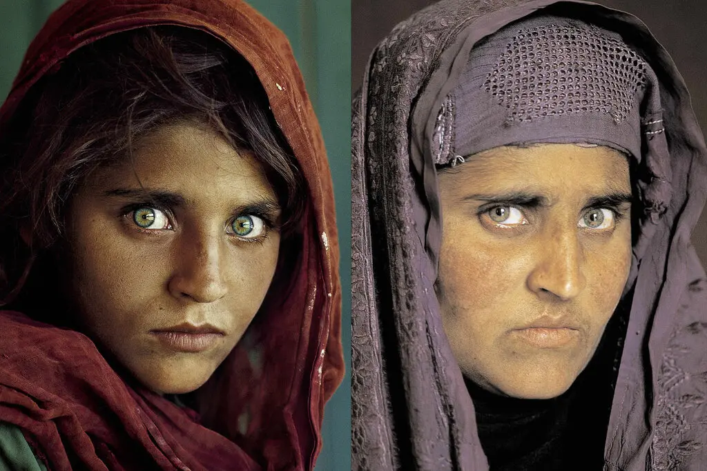

The iris is one of the most fascinating biometric traits. Eyes have always had an important symbolism in arts, religion, and spirituality: "The eyes are the window to the soul".
Iris comes from ancient Greek Ἶρις, meaning both rainbow and halo of the Moon. In mythology, Iris was the personification of the rainbow and messenger of the gods.
Demonstrating the impact of illumination on the robustness of iris codes using Root Mean Square Error (RMSE) between images (blue line) vs Hamming Distance (HD) between corresponding iris codes (green line). Credit: worldcoin.org
The Iris-code
The foundational algorithm for iris recognition was developed by Dr. John Daugman in the 1990s. After more than 30 years, the Daugman's iris-code is still the standard de-facto for iris recognition (at least for high-resolution images).
The iris-code is a binary template encoding the salient features of the iris. Specifically, it encodes the phase of the responses of the iris to a bank of band-pass filters. The binary representation makes the matching as simple as a Hamming Distance, making a 1-to-many comparison extremely lightweight. Before encoding, the iris texture is sampled in a pseudo-polar manner, exploiting the natural circularity of the iris. The prefix "pseudo-" is there since the texture is sampled starting from the pupil to the iris boundary. In this way, the pupil dilation/constriction and the subsequent iris elastic response are absorbed. Furthermore, the pupil and limbus (the iris to sclera boundary) are typically non-concentric, making the pseudo-polar sampling even more pseudo.
Without going into further details, Daugman's virtue was to be able to encode straightforwardly and elegantly the vast entropy and diversity of the iris texture.
If we discard DNA, the iris is virtually the only biometric trait you can use to uniquely distinguish people at the scale of millions or billions. Not by chance, it has been chosen in projects as Aadhaar or, more recently, by WorldCoin.
The Afghan Girl
Sharbat Gula, left, on the cover of National Geographic in 1985, and then nearly two decades later, after she was reunited with the photographer.Credit: Steve McCurry/National Geographic Society
In 1984, National Geographic photographer Steve McCurry took an iconic photograph of an Afghan girl with haunting green eyes in a refugee camp in Pakistan. The image became one of the most famous covers of National Geographic Magazine.
Years later, in 2002, National Geographic decided to locate the girl from the photograph. With few clues, the team faced a daunting task in a region with millions of Pashtun tribespeople. Thanks to the beautiful details of the eyes in the photograph, they eventually successfully located her, identified as Sharbat Gula. Iris recognition technology proved that the woman found was the same girl from McCurry's 1984 photograph, showcasing the power and accuracy of such a biometric trait. This demonstrates another key feature: iris do not age.
Business Card
.
Get in touch
Choose the proper address, depending on the topic.

{kind=link}
{kind=link}